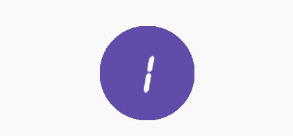

据妇联统计
全国2.7亿家庭中，30%的已婚妇女曾遭受家暴
据联合国统计
全球70%女性在一生中都遭遇过身体暴力或性暴力
《国际反家暴日：经济地位提升能否使女性免受家庭暴力威胁》
《疫情导致针对女性暴力激增，一些国家强奸、谋杀和失踪案上升 》
《中国家庭｜那些因疫情而生的家暴》
《王政：选择“全职太太”，也就选择了被动的人生》
《特写｜何以致死？被虐待的方洋洋的22岁冬天》

《重庆当街杀妻案出现反转，痛斥妻子出轨的凶手男竟是出轨家暴吃软饭的渣男》
《以暴制暴不可取，重庆女子杀死家暴丈夫，被判无期》
《离婚冷静期限制了离婚自由？庇护了家暴方？别把这些误解当真》
《上海杀妻焚尸案：海归男要钱还赌债被拒，刀杀27岁新婚妻子 》
《老妇长期遭受家暴，被丈夫砍打时用木棒“反杀”！法院：防卫过当》
韩玲一直在等——等孩子长大，等他们各自成家，等哪天老头脾气能变好，等岁月和疾病耗完自己的一生。
“家庭的事儿，弄不明白，清官难断家务事。”
“女人是个弱势群体。”
——《家暴反杀者无法逃脱的 50 年》
"你们也有孩子，你们应该也是女儿，如果你们的女儿被别人这样对待，你们怎么想？"
It starts with you，it stays with you。
我想把儿子的暴力，从我这里开始，阻隔掉。
——《“家暴妻子的时候，我没有把她当一个人”》
家庭有时可能是对女性最危险的地方。
发生在家庭中的暴力，仍旧是暴力。
不要再用爱、用家务事这些话语否认它、弱化它。正确认识家庭暴力，减少误解，是挣脱它的第一步。
进入家庭，本不该是一场女性的冒险。
——《死于家暴的女性》